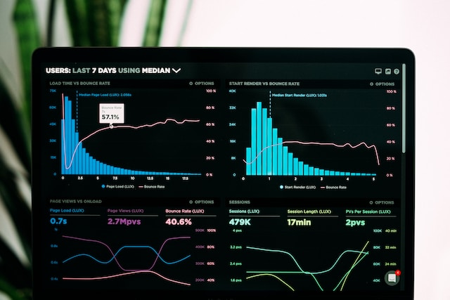
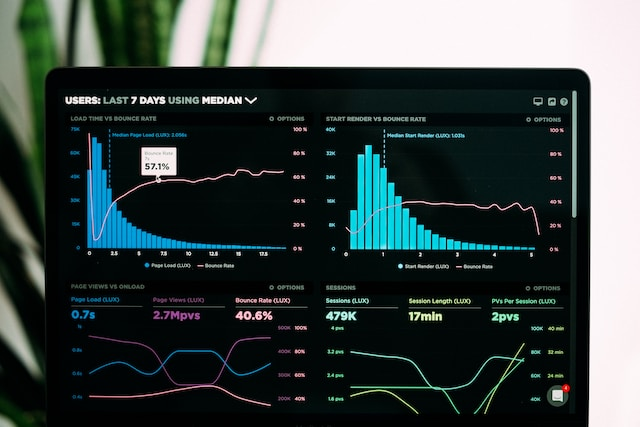

El análisis de datos revela oportunidades, predice tendencias y proporciona claridad. Promover estrategias, minimizar riesgos. y mejorar el éxito empresarial. Descubra el poder detrás de los datos.
Mis Habilidades
▷
Limpieza de data
▷
Procesamiento
▷
Exploración

▷
Análisis de resultados
▷
Interpretación de resultados
▷
Comunicación de resultados
▷ Visualización
▷ Storytelling


 
